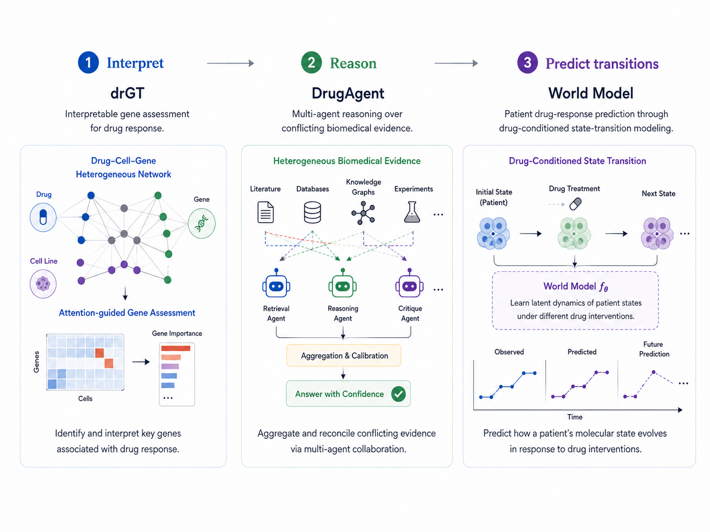

Representation learning
Learning predictive molecular, cellular, and patient representations that preserve information relevant to treatment response and biological context.
UMN / NIH · Bethesda, MD
I develop representation learning and structured machine learning methods for modeling therapeutic response across molecular, cellular, and patient contexts.
About
My research connects representation learning, structured machine learning, pharmacogenomics, and biomedical reasoning to model how cells and patients respond to therapeutic interventions.
Research Directions
Learning predictive molecular, cellular, and patient representations that preserve information relevant to treatment response and biological context.
Modeling treatment-conditioned changes in biological state and generalizing response predictions across drugs, cells, and patient contexts.
Using biological structure and causal principles to improve interpretability, robustness, and generalization under intervention.
PhD thesis story
My thesis develops a progression from explaining drug response, to reasoning across biomedical evidence, to learning representations for treatment-conditioned response prediction.

Publications
Projects
Attention-guided gene assessment over a drug–cell–gene heterogeneous network.
Multi-agent aggregation of heterogeneous and conflicting evidence for drug discovery.
Learning predictive representations for modeling therapeutic perturbations and patient response.
Cross-database exploration of patient-derived cancer cell-line pharmacogenomics.
News
Drug Discovery in the Era of Artificial Intelligence: From Target Identification to Clinical Trials was accepted in Health Data Science.
drGT in NetBio and DrugAgent in Text Mining, with additional Student Council Symposium presentations.
Selected as one of four finalists at the 26th Annual CCR-FYI Colloquium.
Honors & Service
Recognition
Peer review
Community
Contact
For research questions, collaboration, or speaking invitations, contact me by email or through one of the profiles below.